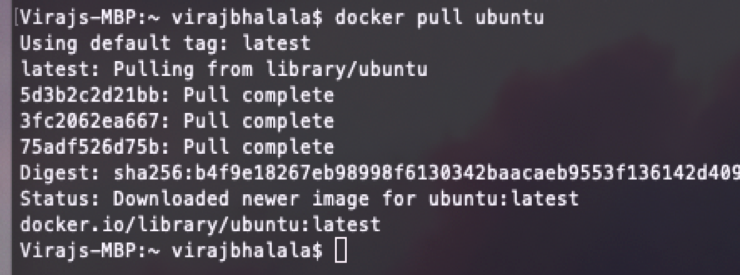
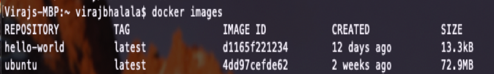
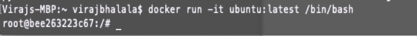

Basic Linux commands
Linux is an open source kernel invented by Linus Torvalds in 1991 and its mascot is a penguin named Tux. This open source kernel has made possible the Linux based operating systems such as Ubuntu and Kali. Linux has become a widely-used operating system for development and several other users. Linux has a command terminal at its core which is a very powerful and efficient way of operating it however, it has a steeper learning curve versus a graphical user interface. Learning the basic Linux commands is a powerful tool for anyone who uses Linux regardless if there is a GUI available or not.
pwd: Finds out the path of the current working directory (folder) you’re in.
ls: The ls command is used to view the contents of a directory. By default, this
command will display the contents of your current working directory.
If you want to see the content of other directories, type ls and then the directory’s path. For
example, enter ls /home/username/Documents to view the content of Documents.
cd: Navigates through directories. cd goes to a folder located in your current path.
You can also use cd /Zarana/Documents/WSD folder for example.
cd ..: to move one directory up
cd /: to move to the root directory
rm: The rm command is used to delete directories and the contents within them. If you only want to delete the directory — as an alternative to rmdir — use rm -r.
cp: Use the cp command to copy files from the current directory to a different directory. For instance, the command cp background.jpg /home/Zarana/Pictures would create a copy of background.jpg (from your current directory) into the Pictures directory.
mkdir: Use mkdir command to make a new directory — if you type mkdir Website it will create a directory called Website.
rmdir: If you need to delete a directory, use the rmdir command. However, rmdir only allows you to delete empty directories.
man: man command provides manual for the help of command.
How to log into your docker container:
Once you have Docker installed and running properly, which can be tested using the hello-world image that is already prebuild, you will need to pull an Ubuntu image from Dockerhub. This image can be used to do a plethora of different tasks, but one that can be of use is hosting an apache webserver. I will discuss how to log into your Docker container that is running Ubuntu Linux below.
Step 1: Pull an Ubuntu image by using the command "docker pull ubuntu".

Step 2: Check to see that your Ubuntu image is downloaded and installed by using the command "docker images".

Step 3: Use the command "docker run -it ubuntu:latest /bin/bash" to log into your Docker container that is running Ubuntu Linux with the bash shell.
